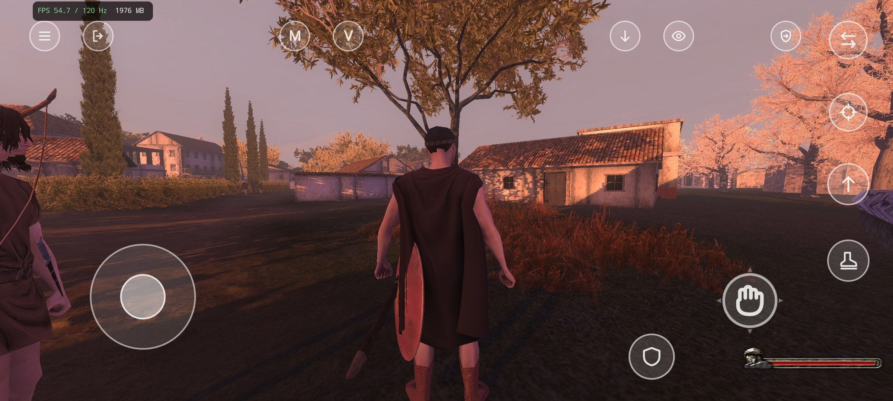
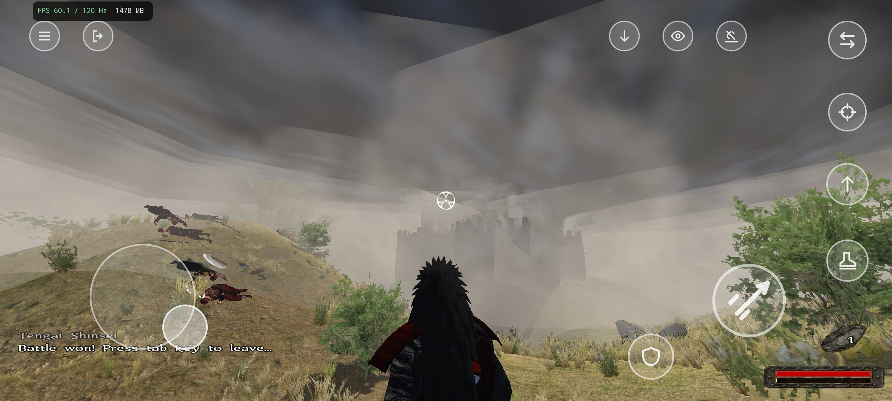
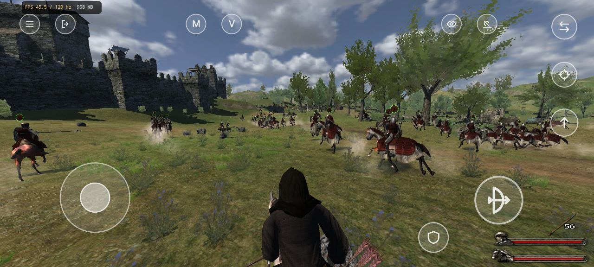
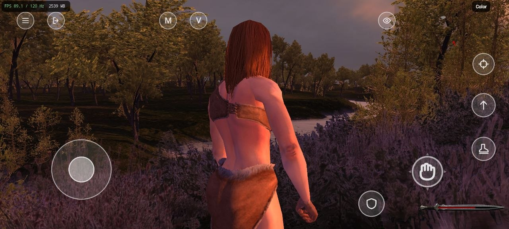

Android için Mount & Blade: Warband başlatıcısı
En son sürümü indir





Özellikler
Hata düzeltmeleri ve kararlı oynanış
Elle test edilmiş 400'den fazla yamayla oyunun birçok hatasını ve sorununu düzeltir.
Statik yeniden derlemeyle yerel performans
dynarmic çeviricisinden 6 kat, x86 emülasyonundan 10 kat daha hızlı.
ARMPORT ile çalışır
Gelişmiş dil desteği
Oyun ve modüller için topluluk ve makine çevirileri, kütüphaneden yüklenir.
Dokunmatik kontroller, oyun kumandası, klavye
Dokunmatik ekranlar, oyun kumandaları ve klavye ile fare için ayarlanabilir kontroller.
Modüller
Orijinal doku formatları. Komut seti 1.174 sürümüne yükseltildi. Modüllerle gelen motor modları desteklenir.
Mod SDK'sı
ARMv7 ve ARM64 için kendi yerel modlarınızı oluşturun. SDK her sürümle birlikte gelir.
Çok oyunculu
Diğer oyuncularla LAN veya internet üzerinden karşılaşın ya da bir Persistent World MMO sunucusuna katılın.
TTS/STT
Cihaz üzerindeki ses modelleri metni sesli okur, sesinizle de birliğinize emir verebilirsiniz.
Özel özellikler
Yumuşak gölgeler ve LOD'lar, sahne geçişleri, HDR ekran desteği, ağaç ve gökyüzü gölgelendiricileri.
Diller
Oyunun kendi dilleri: English, Čeština, Français, Deutsch, Magyar, Polski, 日本語, 简体中文, 繁體中文, Español, Türkçe. Başlatıcıda yerleşik: Русский. Kütüphaneden: Italiano, Português, 한국어, Tiếng Việt, Bahasa Indonesia, עברית, العربية, فارسی, اردو, ไทย.
Oyunun tam sürümü gerekir. M&BTool, oyunun temel dosyalarını ve verilerini içermez. Yalnızca modlar, mobil yama ve çeviriler sunan bir başlatıcıdır ve yasal yollarla edindiğiniz kendi Mount & Blade: Warband kopyanızla çalışır.
Bu, resmi olmayan bir hayran projesidir. TaleWorlds Entertainment veya oyunun yayıncılarıyla bağlantılı değildir ve onlar tarafından desteklenmemektedir. Mount & Blade: Warband ve ilgili tüm adlar, logolar ve içerikler sahiplerine aittir.